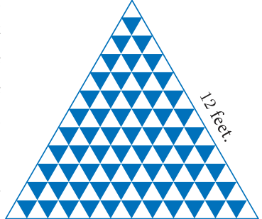

The sum of the terms of a sequence is called series. Let \(a_1, a_2, a_3, \ldots, a_n, \ldots\) be the sequence of real numbers. Then the real number \(a_1 + a_2 + a_3 + \cdots\) is defined as the series of real numbers.
If a series has finite number of terms then it is called a Finite series. If a series has infinite number of terms then it is called an Infinite series. Let us focus our attention only on studying finite series.
2.8.1 Sum to n terms of an A.P.
A series whose terms are in Arithmetic progression is called Arithmetic series.
Let \(a,\ a + d,\ a + 2d,\ a + 3d, \ldots\) be the Arithmetic Progression.
The sum of first \(n\) terms of a Arithmetic Progression denoted by \(S_n\) is given by,
\(S_n = a + (a + d) + (a + 2d) + \cdots + (a + (n - 1)d) \qquad \ldots(1)\)
Rewriting the above in reverse order
\(S_n = (a + (n - 1)d) + (a + (n - 2)d) + \cdots + (a + d) + a \qquad \ldots(2)\)
Adding (1) and (2) we get,
\(\begin{aligned} 2S_n &= [a + a + (n - 1)d] + [a + d + a + (n - 2)d] + \cdots + [a + (n - 2)d + (a + d)] + [a + (n - 1)d + a] \\ &= [2a + (n - 1)d] + [2a + (n - 1)d] + \cdots + [2a + (n - 1)d] \quad (n \text{ terms}) \end{aligned}\)
\(2S_n = n \times [2a + (n - 1)d] \quad \Rightarrow \quad S_n = \dfrac{n}{2}[2a + (n - 1)d]\)
Note
If the first term \(a\), and the last term \(l\) (\(n^{th}\) term) are given then
\(S_n = \dfrac{n}{2}[2a + (n - 1)d] = \dfrac{n}{2}[a + a + (n - 1)d] \qquad (\because l = a + (n - 1)d)\)
\(S_n = \dfrac{n}{2}[a + l].\)
Progress Check
- The sum of terms of a sequence is called \(\underline{\qquad}\).
- If a series have finite number of terms then it is called \(\underline{\qquad}\).
- A series whose terms are in \(\underline{\qquad}\) is called Arithmetic series.
- If the first and last terms of an A.P. are given, then the formula to find the sum is \(\underline{\qquad}\).
Example 2.31
Find the sum of first 15 terms of the A. P. \(8, 7\frac{1}{4}, 6\frac{1}{2}, 5\frac{3}{4}, \ldots\)
Solution
Here the first term \(a = 8\), common difference \(d = 7\frac{1}{4} - 8 = -\dfrac{3}{4}\),
Sum of first \(n\) terms of an A.P. \(\quad S_n = \dfrac{n}{2}[2a + (n - 1)d]\)
\(S_{15} = \dfrac{15}{2}\left[2 \times 8 + (15 - 1)\left(-\dfrac{3}{4}\right)\right]\)
\(S_{15} = \dfrac{15}{2}\left[16 - \dfrac{21}{2}\right] = \dfrac{165}{4}\)
Example 2.32
Find the sum of \(0.40 + 0.43 + 0.46 + \cdots + 1\).
Solution
Here the value of \(n\) is not given. But the last term is given. From this, we can find the value of \(n\).
Given, \(a = 0.40\) and \(l = 1\), we find \(d = 0.43 - 0.40 = 0.03\).
\(\begin{aligned} \text{Therefore, } n &= \left(\dfrac{l - a}{d}\right) + 1 \\ &= \left(\dfrac{1 - 0.40}{0.03}\right) + 1 = 21 \end{aligned}\)
Sum of first \(n\) terms of an A.P. \(\quad S_n = \dfrac{n}{2}[a + l]\)
\(n = 21.\) Therefore, \(S_{21} = \dfrac{21}{2}[0.40 + 1] = 14.7\)
So, the sum of 21 terms of the given series is 14.7.
Example 2.33
How many terms of the series \(1 + 5 + 9 + \ldots\) must be taken so that their sum is 190?
Solution
Here we have to find the value of \(n\), such that \(S_n = 190\).
First term \(a = 1\), common difference \(d = 5 - 1 = 4\).
Sum of first \(n\) terms of an A.P.
\(\begin{aligned} S_n = \dfrac{n}{2}[2a + (n - 1)d] &= 190 \\ \dfrac{n}{2}[2 \times 1 + (n - 1) \times 4] &= 190 \\ n[4n - 2] &= 380 \\ 2n^2 - n - 190 &= 0 \\ (n - 10)(2n + 19) &= 0 \end{aligned}\)
But, \(n = 10\) as \(n = -\dfrac{19}{2}\) is impossible. Therefore, \(n = 10\).
Thinking Corner
The value of \(n\) must be positive. Why?
Progress Check
State True or False. Justify it.
- The \(n^{th}\) term of any A.P. is of the form \(pn + q\) where \(p\) and \(q\) are some constants.
- The sum to \(n^{th}\) term of any A.P. is of the form \(pn^2 + qn + r\) where \(p, q, r\) are some constants.
Example 2.34
The \(13^{th}\) term of an A.P. is 3 and the sum of first 13 terms is 234. Find the common difference and the sum of first 21 terms.
Solution
Given, the \(13^{th}\) term \(= 3\) so, \(t_{13} = a + 12d = 3 \qquad \ldots(1)\)
Sum of first 13 terms \(= 234 \quad \Rightarrow S_{13} = \dfrac{13}{2}[2a + 12d] = 234\)
\(2a + 12d = 36 \qquad \ldots(2)\)
Solving (1) and (2) we get, \(a = 33,\ d = \dfrac{-5}{2}\)
Therefore, common difference is \(\dfrac{-5}{2}\).
Sum of first 21 terms \(\quad S_{21} = \dfrac{21}{2}\left[2 \times 33 + (21 - 1) \times \left(-\dfrac{5}{2}\right)\right] = \dfrac{21}{2}[66 - 50] = 168.\)
Example 2.35
In an A.P. the sum of first \(n\) terms is \(\dfrac{5n^2}{2} + \dfrac{3n}{2}\). Find the \(17^{th}\) term.
Solution
The \(17^{th}\) term can be obtained by subtracting the sum of first 16 terms from the sum of first 17 terms
\(S_{17} = \dfrac{5 \times (17)^2}{2} + \dfrac{3 \times 17}{2} = \dfrac{1445}{2} + \dfrac{51}{2} = 748\)
\(S_{16} = \dfrac{5 \times (16)^2}{2} + \dfrac{3 \times 16}{2} = \dfrac{1280}{2} + \dfrac{48}{2} = 664\)
Now, \(\quad t_{17} = S_{17} - S_{16} = 748 - 664 = 84\)
Example 2.36
Find the sum of all natural numbers between 300 and 600 which are divisible by 7.
Solution
The natural numbers between 300 and 600 which are divisible by 7 are 301, 308, 315, …, 595.
The sum of all natural numbers between 300 and 600 is \(301 + 308 + 315 + \cdots + 595\).
The terms of the above series are in A.P.
First term \(a = 301\); common difference \(d = 7\); Last term \(l = 595\).
\(n = \left(\dfrac{l - a}{d}\right) + 1 = \left(\dfrac{595 - 301}{7}\right) + 1 = 43\)
\(\because S_n = \dfrac{n}{2}[a + l]\), we have \(S_{43} = \dfrac{43}{2}[301 + 595] = 19264.\)
Example 2.37
A mosaic is designed in the shape of an equilateral triangle, 12 ft on each side. Each tile in the mosaic is in the shape of an equilateral triangle of 12 inch side. The tiles are alternate in colour as shown in the figure. Find the number of tiles of each colour and total number of tiles in the mosaic.

Solution
Since the mosaic is in the shape of an equilateral triangle of 12 feet, and the tile is in the shape of an equilateral triangle of 12 inch (1 feet), there will be 12 rows in the mosaic.
From the figure, it is clear that number of white tiles in each row are 1, 2, 3, 4, …, 12 which clearly forms an Arithmetic Progression.
Similarly the number of blue tiles in each row are 0, 1, 2, 3, …, 11 which is also an Arithmetic Progression.
Number of white tiles \(= 1 + 2 + 3 + \cdots + 12 = \dfrac{12}{2}[1 + 12] = 78\)
Number of blue tiles \(= 0 + 1 + 2 + 3 + \cdots + 11 = \dfrac{12}{2}[0 + 11] = 66\)
The total number of tiles in the mosaic \(= 78 + 66 = 144\)
Example 2.38
The houses of a street are numbered from 1 to 49. Senthil’s house is numbered such that the sum of numbers of the houses prior to Senthil’s house is equal to the sum of numbers of the houses following Senthil’s house. Find Senthil’s house number?
Solution
Let Senthil’s house number be \(x\).
It is given that
\(\begin{aligned} 1 + 2 + 3 + \cdots + (x - 1) &= (x + 1) + (x + 2) + \cdots + 49 \\ 1 + 2 + 3 + \cdots + (x - 1) &= [1 + 2 + 3 + \cdots + 49] - [1 + 2 + 3 + \cdots + x] \\ \dfrac{x - 1}{2}[1 + (x - 1)] &= \dfrac{49}{2}[1 + 49] - \dfrac{x}{2}[1 + x] \\ \dfrac{x(x - 1)}{2} &= \dfrac{49 \times 50}{2} - \dfrac{x(x + 1)}{2} \\ x^2 - x &= 2450 - x^2 - x \Rightarrow 2x^2 = 2450 \\ x^2 &= 1225 \Rightarrow x = 35 \end{aligned}\)
Therefore, Senthil’s house number is 35.
Example 2.39
The sum of first \(n\), \(2n\) and \(3n\) terms of an A.P. are \(S_1\), \(S_2\) and \(S_3\) respectively. Prove that \(S_3 = 3(S_2 - S_1)\).
Solution
If \(S_1, S_2\) and \(S_3\) are sum of first \(n\), \(2n\) and \(3n\) terms of an A.P. respectively then
\(S_1 = \dfrac{n}{2}[2a + (n - 1)d], \quad S_2 = \dfrac{2n}{2}[2a + (2n - 1)d], \quad S_3 = \dfrac{3n}{2}[2a + (3n - 1)d]\)
Consider,
\(\begin{aligned} S_2 - S_1 &= \dfrac{2n}{2}[2a + (2n - 1)d] - \dfrac{n}{2}[2a + (n - 1)d] \\ &= \dfrac{n}{2}\big[[4a + 2(2n - 1)d] - [2a + (n - 1)d]\big] \\ S_2 - S_1 &= \dfrac{n}{2} \times [2a + (3n - 1)d] \\ 3(S_2 - S_1) &= \dfrac{3n}{2}[2a + (3n - 1)d] \\ 3(S_2 - S_1) &= S_3 \end{aligned}\)
Thinking Corner
- What is the sum of first \(n\) odd natural numbers?
- What is the sum of first \(n\) even natural numbers?